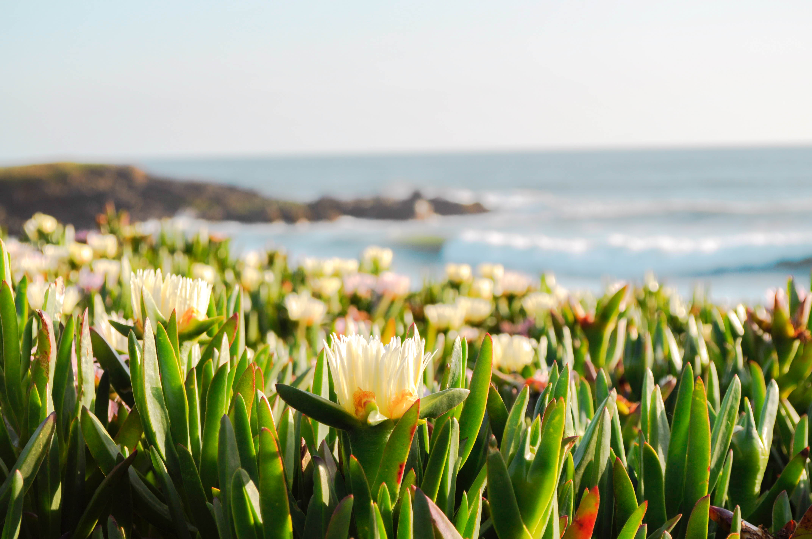
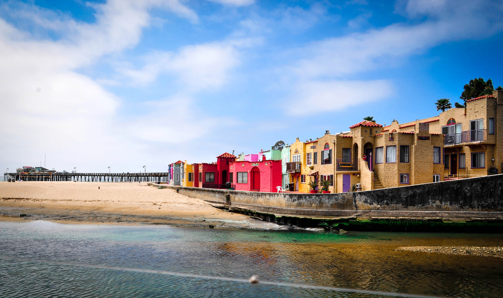

Pescadero — Pigeon Point Lighthouse. Perched on a cliff on the central California coast, 50 miles south of San Francisco, the 115-foot Pigeon Point Lighthouse, one of the tallest lighthouses in America, has been guiding mariners since 1872. Its five-wick lard oil lamp, and first-order Fresnel lens, comprised of 1,008 prisms, was first lit at sunset, November 15, 1872. The lens stands 16 feet tall, 6 feet in diameter, and weighs 2,000 pounds. It sits in a lantern room that had been constructed at the Lighthouse Service's general depot in New York before being shipped around the Horn. Although the original Fresnel lens is no longer in use, the lighthouse is still an active U.S. Coast Guard aid to navigation using a 24 inch Aero Beacon...
Read More…

Bean Hollow — Bean Hollow State Beach is a beach in the state park system of California, USA. It is located in San Mateo County near Pescadero. The beach offers fishing, picnicking and beachcombing. Visitors can explore tide pools with anemones, crab, sea urchins and other marine inhabitants. The beach also has a self-guided nature trail. Swimming is dangerous because of cold water, rip currents, heavy surf ...
Read More…

Capitola — Capitola's History
Today's village and resort owes its growth and survival to early landowner Frederick Augustus Hihn (pronounced Heen), a German immigrant and pioneer recognized as a leader of much of Santa Cruz County's early industry and commercial enterprise.
Hihn acquired the area known as Soquel Landing from the heirs of the Castro family and paid for the first wharf built in 1857. The shipping point rapidly became an important...
Read More…
Santa Cruz Wharf — The Santa Cruz Wharf is a wharf in Santa Cruz, California, USA, known for fishing, boat tours, viewing sea lions, dining, and gift shops. The current wharf was built in 1914, the last of six built on the site, and is operated by the City of Santa Cruz Parks and Recreation Office. With a length of 2,745 feet (836.68 m), it is the longest pier on the West Coast of the United States.[1]
A fish market on the wharf is featured in scenes from the film Sudden Impact....
Read More…